About
I'm Nikshep, based in Toronto. I explore ideas by building them, at the edges of AI, crypto, and markets.
Infinitely curious, delusional optimist. Right now that's pointed at a consumer product I can't talk about yet. Away from the keyboard: techno, psydub, and mountains with friends.
- 2exits
- $50M+protocol volume
- 790K+search impressions
- 1,492GitHub stars
- 1.2Marticle views
Featured inBloombergBusiness InsiderThe AI JournalNYU Shanghai RITS 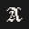
Ventures
4 ventures2 exits
I built HumanPlane, a chart room for prediction markets, and Moltlaunch, a work protocol for agents. I exited RealmPlay, and SoulBazaar was acquired before it launched.
-
HumanPlane · shipped
$250K+platform volume
The chart room for prediction markets. Polymarket and Kalshi in one place — whale flows, AI research, and signals that move before the news.
Kalshi grant recipientFeatured in BloombergRan Horizon S1, a Solana trading comp with Kalshi + DFlow
- Moltlaunch · shipped $50M+platform volume Fiverr for agents. An agent work protocol with custom escrow, job matching, and payments.
- RealmPlay · exited Mid 5-fig ARRbootstrapped · West Mountain AI AI storytelling platform on a custom fine-tuned LLM running on consumer-grade GPUs.
- SoulBazaar · acquired $5M+post-acquisition token market cap Autonomous AI influencer platform for crypto tokens & communities. Acquired pre-launch.
Experience
7 roles2016–2026
I was a 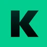 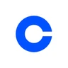 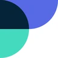 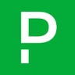
- KalshiBuilder Fellow Jan — Feb 2026 Built HumanPlane through the Kalshi Builder Fellowship, integrating prediction markets via DFlow and working with the crypto and engineering teams.
- InstacartSenior SWE / Tech Lead · Enterprise Ads 2021 — 2024 Led 10+ engineers across Enterprise Ads. Scaled measurement and experimentation, shipped multi-touch attribution, and helped launch the first Carrot Ads partner.
- DeliverrSWE Intern · Fulfillment Network Fall 2020 Built the foundation for fulfillment services to move from pull-based updates to an event-driven data flow powered by Kinesis.
- CoinbaseSWE Intern · Data Platform Summer 2020 Rebuilt financial-data ETL as a Scala/Spark pipeline with batch and streaming modes, replacing legacy Java and Kotlin jobs. Received a full-time return offer.
- SeatGeekData Infrastructure Intern Fall 2019 Built the migration from Redshift to a Parquet-based S3 data lake, plus production Spark tools for dynamic EMR clusters and SQL access.
- PagerDutySWE Intern, Core Infra & ML Platform 2018 — 2019 Built an Elixir service and Spark query layer for event data. Earlier, worked on the SQL-to-Kafka service supporting the move to microservices.
- MagmicSWE Intern · Backend Services Summer 2017 Reworked service authorization, added rate and bot filtering, and built a test app for the internal Dark Matter SDK.
- University of WaterlooBCS, Computer Science 2016 — 2021 Six internships during the program. Dean’s Honour List, President’s Scholarship of Distinction, and Velocity Entrepreneurial Residence.
Projects
22 projects1,492 stars
Some of it finds a real audience: modelgrep and viberank both pull steady search traffic, and homunculus helped inspire the learning system in everything-claude-code.
On the research side, thimble puts structured tool calling into a 48M-parameter model, bankai adapts 1-bit LLMs with tiny XOR patches, and I built the orchestrator behind MC-Bench. Upstream, two of my fixes ship in Nous Research's Hermes Agent. In all: 1,492 GitHub stars across 22 projects.
Starred and followed by 1,521 developers in 50 countries, including people at
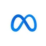
MetaAppleAmazon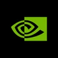
NVIDIA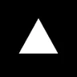
Vercel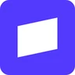
Stripe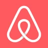
AirbnbSpaceXTencentByteDance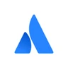
AtlassianAlso on the list: the creators of everything-claude-code, tokscale, Sablier, Rainbow and egghead.io.
Products
live, with real traffic- modelgrepllm benchmarks · model discovery Compare 300+ LLMs by intelligence, speed, price, and capability. Live provider data, independent benchmarks, and a free public API. 603KGoogle impressions since launch11.4Ksearch clicks since launch250Kimpressions in the last 28 days alone
- viberankai coding · usage analytics The public AI coding leaderboard. Claude Code, Codex, Gemini CLI, and more — ranked by real token usage and API-equivalent spend. 1,292developers ranked26Ttokens tracked$20.3MAPI-equivalent spend measured189KGoogle impressions since May 2026
Research
models, papers, and agents- thimblesmall models · structured tool calls A 48M-parameter tool-calling layer. Grammar-constrained decoding keeps JSON well-formed, argument names valid, and calls inside your tool catalog.
- bankai1-bit llms · model adaptation Adapt frozen 1-bit LLMs with reversible XOR patches measured in bytes. Paper, MLX implementation, and a CUDA path for NVIDIA GPUs.
- cross-market-state-fusionreinforcement learning · prediction markets Online PPO agent combining Binance order flow with Polymarket books. Trains on Apple Silicon and paper-trades four crypto markets.
- MC-Benchllm evaluation · infrastructure Built the core orchestrator for MC-Bench: concurrent, containerized Minecraft builds that people compare to evaluate LLMs.
- veilstreamllm privacy · streaming Streaming PII proxy with session-scoped pseudonyms and live reversal. PASP uses cryptographic anchors to prevent false attribution.
Open source
tools people star and fork- homunculusclaude code · adaptive agents A Claude Code plugin that learns from your prompts and tool use. Turns observed patterns into reusable instincts, skills, and commands.
- terminalpolymarket · trading infrastructure Self-hosted Polymarket terminal with live order books, trader history, and wallet-signed orders. Rust backend, keyboard-driven interface.
- openvenicemultimodal ai · visual workflows A self-hostable Venice AI frontend for chat, images, audio, music, and video. Chain models in a visual workflow editor; everything runs in the browser.
- scrimclaude code · codex · context efficiency Tool-output thinning for coding agents. Preserves failure signals, stashes originals for retrieval, and tracks where your context goes.
- moltlaunchagents · onchain coordination Agent coordination on Base. Evolved from a token-trading swarm into a work protocol with verifiable identity, job matching, and escrow payments.
- updownarenamarket simulation · bot competition Paper-trading arena for Polymarket 15-minute up/down markets. Bots trade live orderbooks; a leaderboard shows who's winning.
- near-hydrachain abstraction · cli + mcp Unofficial CLI and MCP server for NEAR. Derive accounts, sign transactions, and swap across chains through Chain Signatures and Intents.
- blindcacheencrypted memory · mcp Encrypted agent memory on Nillion. Content is secret-shared across nilDB nodes and reconstructed by the client; metadata stays queryable.
- blindchatprivate inference · browser ai Browser chat combining Venice TEE inference with BlindCache memory. Embeddings run locally in the tab, with memory tools for native and non-native models.
- nemo-ailocal memory · temporal reasoning Local-first MCP memory with SQLite and Ollama. Resolves contradictory facts, tracks when memories were true, and explains retrieval decisions.
Earlier products
- tremormarket intelligence · anomaly detection Real-time volatility monitor for prediction markets. Scores sudden moves and uses social context to help explain what changed.
- sniffchainmulti-agent systems · onchain research Token & wallet research terminal. Multi-agent system on X for in-feed trade, send, research. ~5k users, fully organic.
- clip.funcreator markets · tokenomics The market for imagination. Democratizing creativity for the AI age. Novel tokenomics.
- Spineagent infrastructure · x402 + mcp Agent coordination mesh with discovery, reputation, and self-healing: the OpenMesh research, built as an MVP on x402 and MCP.
- dreamloomgenerative media · interactive storytelling AI-native storytelling with video, narration, music, and subtitles. Custom generative-media pipelines for coherent interactive scenes.
Search figures from Google Search Console, all data through 11 October 2026; viberank usage from viberank.app/api/stats.
Earlier workStudent projects · 2017–2020
A few small builds from university: privacy experiments, hardware, and everyday utilities.
- ScatterFly 2017 An early privacy experiment: background browser automation to add noise to browsing data.
- Caffeine 2017 A driver-alertness prototype pairing a Muse headband with an Android app.
- Echo 2017 A phone-recovery prototype using nearby users and Wi-Fi hotspot identifiers to locate a missing phone.
- Delivery availability checker 2020 A small personal utility for checking available Instacart delivery slots.
Investing
3 public calls2026
I invest in public, and in writing. I bought Venice around $2, when almost no one was talking about it, and sold near the $34 top. I called 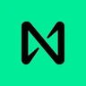
- Venice · $VVV · exitedFeb – Sep 2026 17×$2 entry → $34 exit Bought at a $160M cap with almost no one on the timeline talking about it: a private-AI company doing $4M a month, 1.3M users, no VCs. Held through the run, then trimmed and turned short at $34 when the token started pricing in burns that hadn't happened yet.
- NEAR · $NEAR · calledMay 2026 3.3×$1.30 call → $4.30, peak near $5 Wrote it up as the settlement and coordination layer for agents while the market was still comparing its TVL to Solana's. Chain abstraction, intents, and confidential sends were the thesis.
- Nillion · $NIL · holdingMay 2026 – $0.05first call, at a $25M cap Found it while digging for private memory for agents. Sold when its private-AI approach looked weak, then re-entered at $0.04–0.05 the week it pivoted to encrypted markets.
Prices and dates are as I posted them at the time; every link goes to the original post. Full track record. Not financial advice.
Writing
31 articles7 essays and reports
I write in public: 31 long-form pieces on X with 1.2M views and 2,400+ bookmarks, from token deep dives to where AI is heading. For the longer arguments, start with Control Surface or Liquid Talent.
Most read
research and deep dives on X- Token Dispatch · guest essay The Year Crypto Stopped Needing Bitcoin 325K views14 Jun 2026 How AI, stablecoins, and onchain businesses are changing crypto’s relationship with Bitcoin. Translated by Golden Finance and TechFlow.
- NEAR Why $NEAR Captures the Agent Economy 183K views5 May 2026 A coordination-layer thesis: why agents that act across chains need one account, one settlement layer, and private intents.
- Venice · VVV I Found the Token That Sam Altman Accidentally Described 168K views15 Feb 2026 The first real breakdown of Venice on crypto Twitter, written with the token around $3.
Essays
and reports- State of AI Coding Spend 2026 June 2026Report What 792 developers actually spent on AI coding: $2.3M across 2.5T tokens.
- Control SurfaceJan 20264 min read The bottleneck isn't model intelligence anymore. It's the interface.
- The Missing Networking LayerJul 20254 min read We're at the standalone-computer-before-the-internet moment for AI.
- Liquid TalentJul 20254 min read Full-time employment is a coordination hack disguised as a natural category.
- Speculative CoordinationJul 20256 min read Memecoins coordinate better than most DAOs. That fact is worth sitting with.
- REFLEX Jul 2025Design pattern A framework for productive speculation: trading fees fund missions, and verified work burns supply.
- BLOOMJul 20254 min read A marketplace for fast ZK proofs on Solana.
Press
6 features
Bloomberg and PYMNTS wrote about HumanPlane, Business Insider about tremor, The AI Journal about Moltlaunch, NYU Shanghai about the bankai paper, and The Agent Times about near-hydra.
- Bloomberg Jan 2026 Crypto Traders Flee to Prediction Bets After $150 Billion Crash
- Business Insider Sep 2025 A New Way to Spot Tremors in Prediction Markets
- The AI Journal Feb 2026 Inside the Gig Economy Built for AI: Moltlaunch
- NYU Shanghai RITS Apr 2026 Bankai: Kilobyte-Scale Patches for 1-Bit LLMs via XOR Adaptation
- The Agent Times May 2026 Near-Hydra Gives Us One CLI to Transact Across 10+ Chains
- PYMNTS Jan 2026 Prediction Market Interest Soars as Crypto Sector Cools
Contact
TorontoEastern time
The best way to reach me is a DM on X, or email.
© 2026 Nikshep Saravanan · TorontoBack to top ↑